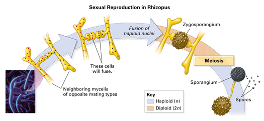
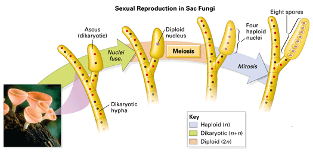

Objectives
- Compare and contrast the zygote fungi, sac fungi, and club fungi.
- Distinguish the yeasts from other groups of fungi.
- Explain how molds differ in lifestyle from other fungi.
Key Terms
How diverse is the fungus kingdom? In size alone, fungi range from microscopic organisms to single organisms that are larger than a golf course. The major groups of fungi are distinguished primarily by their life cycles and by structures related to reproduction.
The Zygote Fungi
The fuzzy black growth often found on "moldy" bread is actually one of several species of fungi that readily grow on bread. One example is Rhizopus stolonifer, which belongs to a group called the zygote fungi. Zygote fungi are mostly terrestrial and live in soil or on decaying plant and animal material. When food is available, the fungus's hyphae spread out over the food and absorb nutrients. Under these conditions the fungus reproduces asexually via sporangia (singular, sporangium), spore-forming structures at the tips of the hyphae. When the food supply of a zygote fungus becomes depleted, it reproduces sexually. The "parents" in a sexual union are mycelia that are identical in appearance, but contain different genetic material. When the mycelia of the two parents come together, they form a thick-walled reproductive structure called a zygosporangium (Figure 18-4). Within the zygosporangium, nuclei from the two parents fuse and form diploid nuclei. The zygosporangium is able to tolerate long periods of drying or freezing. When conditions become favorable, the diploid nuclei undergo meiosis and produce haploid spores. The spores are then released and can grow into new hyphae.
|  |
Figure 18-4
The sexual reproduction of zygote fungi includes the fusion of hyphae from two different fungi. The product is a hardy zygosporangium. |
The Sac Fungi
Sac fungi live in marine, freshwater, and terrestrial habitats. They range in size from single-celled species to large morels. Sac fungi get their name from a specialized reproductive structure or "sac," called an ascus, which contains spore cells. Like the zygote fungi, sac fungi usually reproduce asexually when conditions are suitable, and sexually when conditions become harsh. Asexual reproduction in sac fungi produces an enormous number of spores. These asexual spores are formed externally in long chains or clusters at the tips of specialized hyphae.
Also like zygote fungi, sexual reproduction in sac fungi involves the joining of two genetically different mycelia. This produces dikaryotic hyphae in which each cell has two separate nuclei, one from each parent fungus. The dikaryotic hyphae grow into a large aboveground reproductive structure called a fruiting body (Figure 18-6). An ascus develops at the tip of each specialized hypha in the fruiting body. Within the ascus the dikaryotic nuclei fuse, forming a single diploid nucleus. The diploid nucleus then undergoes meiosis and forms haploid spores. Notice that the zygote undergoes meiosis before spores develop. Although these spores are haploid, they are the result of sexual reproduction (the fusion of genetically different mycelia). Therefore these haploid spores contain varied genetic information. This contrasts with the genetically identical spores found in asexual reproduction.
|  |
Figure 18-6
The sexual reproduction phase of a sac fungus's life cycle includes the formation of a spore-forming ascus. |
Some species of sac fungi are the most devastating of plant parasites. For example, the American chestnut tree has virtually disappeared from the landscape due to a sac fungus called Endothia parasitica that causes chestnut blight.
The Club Fungi
The fungi that are probably most familiar to you, mushrooms, puffballs, and rusts, are classified as club fungi. For example, Agaricus bisporus is a club fungus that is the commercial mushroom most often sold in grocery stores. Club fungi are named for their club-shaped, spore-producing structure called a basidium. Many club fungi are important decomposers of wood and other plant material. In many ecosystems they play a key role by breaking down the wood of weak, damaged, or dead trees. Other species of club fungi are plant parasites.
You can follow the life cycle of a club fungus in Figure 18-7. Spores are most often formed by sexual reproduction in club fungi. (Asexual reproduction is less common in club fungi than in sac fungi.) The spores drop from the "gills" on the underside of the mushroom and are carried by wind or by contact with animals. If the spores land in a favorable environment, they germinate and form a haploid mycelium. This mycelium may mate with another, starting the cycle over again.
 |
Figure 18-7
Club fungi primarily reproduce by sexual reproduction. Genetically different mycelia fuse and form dikaryotic mycelia. These grow into the umbrella-shaped structures commonly called mushrooms. |
Mycelia can sometimes grow so rapidly that a full-sized mushroom can appear in just a few hours. Once a mycelium begins to grow in an open field, it may grow outward equally in all directions. Mushrooms develop at the outer edge of the mycelium and, therefore, often appear in a circular ring, sometimes called a fairy ring. All the mushrooms in the ring are connected to the same mycelium beneath the ground. The fairy ring slowly increases in diameter as the mycelium advances and grows new mushrooms.
Yeasts
Single-celled fungi, called yeasts, inhabit liquid or moist habitats including plant sap and animal tissues. Yeasts reproduce asexually, by simple cell division or by the pinching of small "buds" off a parent cell. Some yeast species also reproduce sexually by forming an ascus or a basidium and are classified as sac fungi or club fungi. Other yeasts have never been observed to reproduce sexually. These and other fungi with no known sexual stage of reproduction are placed in an informal category called the imperfect fungi.
Humans have used yeasts to raise bread dough and ferment alcoholic beverages for thousands of years. For example, baker's yeast (Saccharomyces cerevisiae) is a sac fungus that carries out fermentation, as you read in Chapter 7. The yeast cells release small bubbles of carbon dioxide that cause bread dough to rise.
Molds
Any fungus that grows very rapidly on a surface is generally referred to as a mold. Such rapid growth usually involves asexual reproduction. Some molds are included with the imperfect fungi because they have no known sexual stage. However, many molds do have sexual stages that place them as zygote, sac, or club fungi. For example, the zygote fungus Rhizopus, which you read about earlier, is a common bread "mold." Penicillium, a sac fungus, is another common mold that often grows on fruit. One species of Penicillium is the source of the antibiotic penicillin. For the fungus, the antibiotic keeps bacteria from growing near it and competing for food.
Mold spores are airborne and are found almost everywhere. Warm, moist environments are ideal for spore germination and mold growth. Even the cellulose in paper and book covers provide ample nutrition for certain molds. Molds can also damage clothing, leather, paint, and even many plastics.
Concept Check 18.2
1. Create a table comparing and contrasting the reproductive structures and processes of the zygote fungi, sac fungi, and club fungi.
2. How are yeasts different from other fungi?
3. What characteristic defines a fungus as a mold?